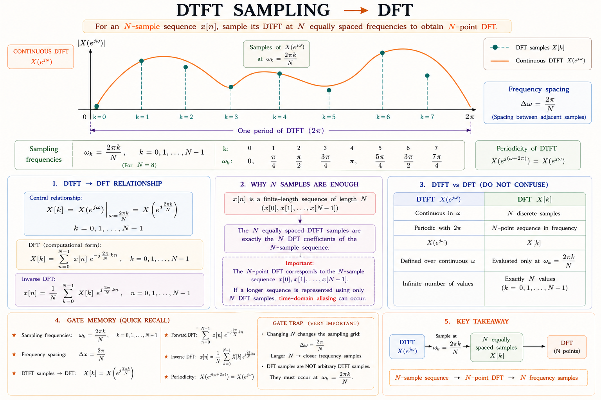
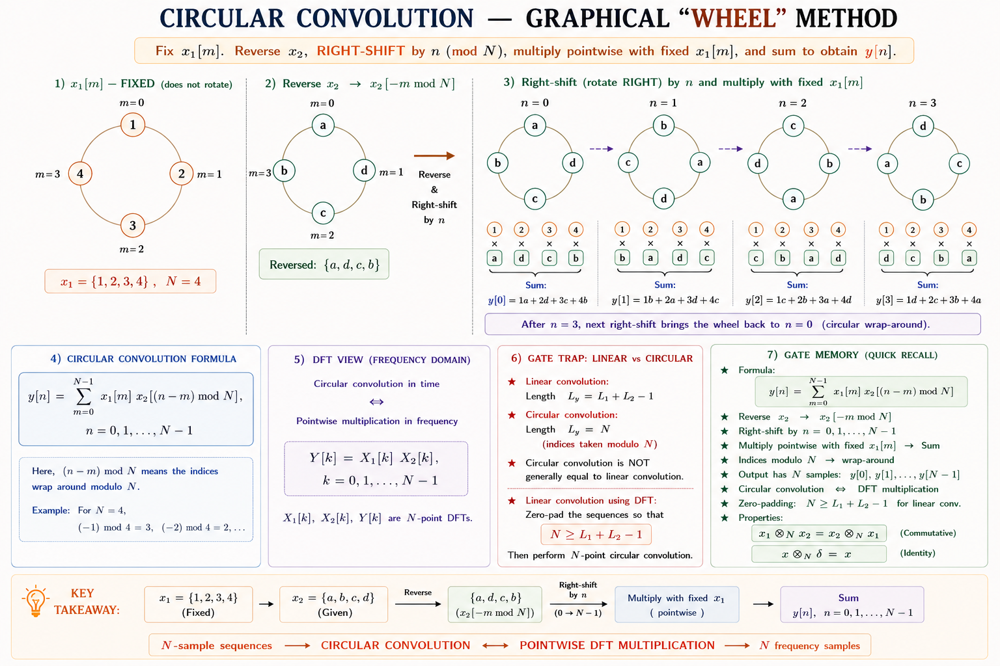
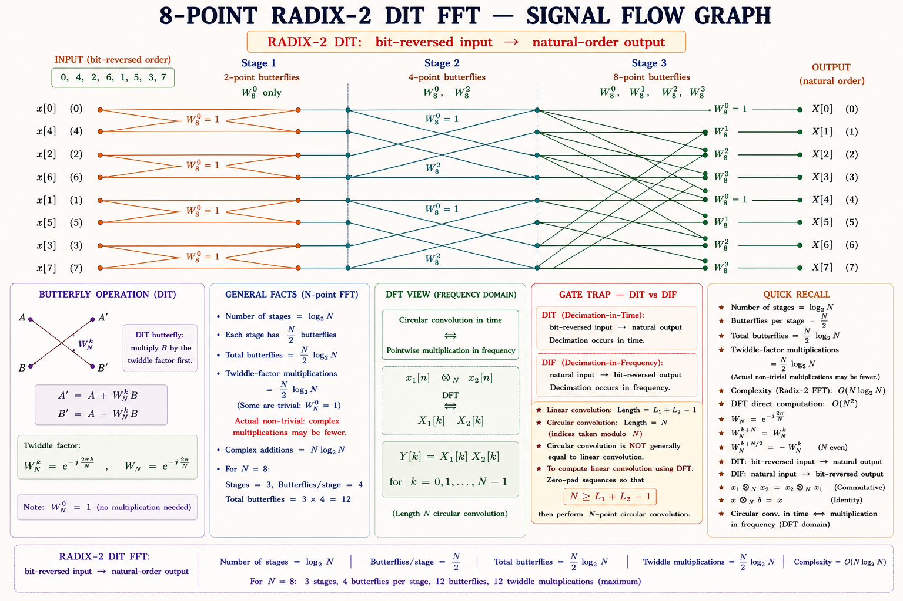

The Discrete Fourier Transform & Fast Fourier Transform
A complete deep-dive into the DFT — the only Fourier representation a digital computer can actually
compute. Covers the DFT/IDFT pair, its core properties, circular convolution, linear convolution via the DFT, and
the Radix-2 FFT algorithm that makes real-time spectral analysis possible — essential for GATE EE/EC, IES/ESE and
ISRO exam aspirants.
GATE EE/ECIES/ESEISRO Scientist/EngineerACE Academy NotesCh. 9 — DFT & FFT
Course Progress
Ch 9 / 12
01
Big Picture — Why the DFT?
💡
The Problem It Solves
The Fourier series works only for periodic signals, and the DTFT gives a spectrum \(X(e^{j\omega})\) that is
continuous in frequency. Neither can be typed into a computer or a DSP chip, because a
processor can only store and multiply a finite list of numbers. The Discrete Fourier
Transform (DFT) is the bridge: it maps a finite-length discrete-time sequence to a finite-length
discrete-frequency sequence — both sides are arrays a computer can actually hold in memory.
Every time a signal is digitized — a voice sample, a sensor reading, a radar echo — the resulting sequence is finite
in length. To analyse its frequency content numerically, we need a transform whose input and output are
both finite, discrete arrays. The DFT is precisely that transform, and it connects seamlessly with everything
studied so far: it is the DTFT of a finite sequence, sampled at N equally spaced points in frequency, and it is
also what you get by evaluating the Z-transform on the unit circle at N equally spaced angles.
Where the DFT Shows Up in Real Engineering
Digital audio & speech processing — computing the spectrogram of a voice signal, pitch
detection, noise-cancelling headphones.
Image & video compression — JPEG and MPEG use the closely related Discrete Cosine
Transform, whose fast computation borrows FFT ideas.
OFDM in 4G/5G and Wi-Fi — every OFDM symbol is generated with an IDFT at the transmitter and
decoded with a DFT (FFT) at the receiver; this is the single most widely deployed use of the FFT today.
Digital filter design & implementation — fast (FFT-based) convolution for FIR filtering
of long data streams via overlap-add/overlap-save.
Radar & sonar signal processing — Doppler frequency estimation from a pulse train using
the DFT of the received echoes.
Vibration & fault analysis — spectral analysis of machine vibration signals for bearing
fault detection in industrial condition monitoring.
🔑
Connects With
DFT builds directly on the DTFT (frequency-domain sampling) and the Z-transform
(DFT = Z-transform evaluated on the unit circle at N points). It also feeds forward into digital filter
design and communication systems (OFDM), making it one of the highest-yield topics for GATE.
02
From DTFT to DFT — Sampling in the Frequency Domain
For a finite-length sequence \(x[n]\) of length N (defined for \(n = 0, 1, \dots, N-1\)), the DTFT
\(X(e^{j\omega}) = \sum_{n=0}^{N-1} x[n]e^{-j\omega n}\) is a continuous, periodic function of
\(\omega\) with period \(2\pi\). Storing this continuous function exactly would require infinite data. The key
idea behind the DFT is to sample this continuous spectrum at exactly N equally spaced points over one period:
Frequency sampling — the origin of the DFT
$$ \omega_k = \frac{2\pi k}{N}, \quad k = 0, 1, \dots, N-1 $$
$$ X[k] \triangleq X(e^{j\omega})\Big|_{\omega = 2\pi k/N} = \sum_{n=0}^{N-1} x[n]\,e^{-j2\pi kn/N} $$
Because exactly N samples of a period-\(2\pi\) function are enough to reconstruct it without loss (for a sequence of
length ≤ N), no information is lost by sampling the DTFT this way — the DFT is a complete and exactly
invertible representation of a finite-length sequence, not an approximation.

Figure 9.1 — The DFT is obtained by sampling the continuous, periodic DTFT spectrum at N equally
spaced frequency points \(\omega_k = 2\pi k/N\). No information is lost for a length-N sequence.
⚠️
Common Confusion — DFT is Not an Approximation
Students often think the DFT is a "discretized, less accurate" version of the DTFT. In fact, for a
finite-length sequence of length N, sampling its DTFT at N points captures it exactly —
the original sequence can always be perfectly recovered via the IDFT. Error only creeps in if you use
fewer than N samples (aliasing in the time domain) or if the sequence itself is not finite-length.
03
DFT & IDFT — Definition and Derivation
For convenience, define the twiddle factor \(W_N = e^{-j2\pi/N}\), the primitive N-th root of
unity. The DFT pair is then written compactly as follows.
The DFT can be viewed as a linear transformation of the N-point vector \(\mathbf{x}\) by an \(N\times N\) matrix of
twiddle factors — this viewpoint is exactly what makes the circulant/matrix method of circular convolution work.
▸\(x[n]\) is treated as periodic with period N when using the DFT.
▸\(X[k]\) is likewise periodic with period N: \(X[k+N] = X[k]\).
▸This implicit periodicity is exactly why convolution "wraps around" —
giving rise to circular convolution.
Twiddle Factor Facts
▸\(W_N = e^{-j2\pi/N}\); it lies on the unit circle.
▸\(W_N^{N} = 1\) and \(W_N^{N/2} = -1\).
▸\(W_N^{k(N-n)} = W_N^{-kn} = (W_N^{kn})^{*}\) — used heavily in FFT
derivations.
✅
GATE Insight — Relation to Z-Transform
The DFT is nothing but the Z-transform \(X(z)\) evaluated at N equally spaced points on the unit circle:
\(X[k] = X(z)\big|_{z = e^{j2\pi k/N}}\). If a GATE question gives \(X(z)\) and asks for the DFT, simply
substitute \(z = e^{j2\pi k/N}\) for \(k = 0,\dots,N-1\).
04
Properties of the DFT
Almost every DFT numerical in GATE/IES is solved faster using a property rather than direct summation. Master this
table — it is the single highest-value asset in this chapter.
Property
Time Domain
DFT Domain
Linearity
\(a\,x_1[n] + b\,x_2[n]\)
\(a\,X_1[k] + b\,X_2[k]\)
Periodicity
\(x[n+N] = x[n]\)
\(X[k+N] = X[k]\)
Circular time shift
\(x[(n-m) \bmod N]\)
\(W_N^{km}\,X[k]\)
Circular freq. shift (modulation)
\(W_N^{-ln}\,x[n]\)
\(X[(k-l)\bmod N]\)
Time reversal
\(x[(-n)\bmod N] = x[(N-n)\bmod N]\)
\(X[(-k)\bmod N]\)
Circular convolution
\(x_1[n] \circledast x_2[n]\)
\(X_1[k]\,X_2[k]\)
Multiplication
\(x_1[n]\,x_2[n]\)
\(\tfrac{1}{N}X_1[k] \circledast X_2[k]\)
Parseval’s theorem
\(\sum_n |x[n]|^2\)
\(\tfrac{1}{N}\sum_k |X[k]|^2\)
Duality
DFT of \(X[n]\)
\(N\,x[(-k)\bmod N]\)
Symmetry for a Real-Valued Sequence
Almost all practical signals \(x[n]\) are real-valued. In that case the DFT is conjugate symmetric,
which lets you compute only about half the DFT coefficients:
Because of conjugate symmetry, real-input FFT libraries (and hardware) only need to compute and store
\(N/2 + 1\) unique complex values instead of N — halving both memory and computation for real signals such
as audio or sensor data.
Two Illustrative Special Cases
DC Value X[0]
▸\(X[0] = \sum_{n=0}^{N-1}x[n]\) — simply the sum of all samples (N × average
value).
▸A quick sanity check on any DFT numerical.
Sum of All X[k]
▸\(\sum_{k=0}^{N-1}X[k] = N\,x[0]\) (from the IDFT definition at n=0).
▸Frequently used as a shortcut to verify a computed DFT table.
⚠️
GATE Trap — Circular vs Linear Shift
The DFT time-shift property is a circular shift, not an ordinary linear shift. Shifting
\(x[n]\) linearly and taking the N-point DFT does not simply multiply by \(W_N^{km}\) unless the
shifted samples that "fall off the end" wrap around to the beginning (i.e., a genuine circular shift).
05
Circular Convolution
💡
Definition
Circular convolution of two N-point sequences \(x_1[n]\) and \(x_2[n]\) folds one sequence around a circle
of N points instead of sliding it linearly off the end. It is the time-domain operation that corresponds
to simple multiplication of DFTs.
Direct summation — apply the formula above term by term for each n; reliable but slow for
hand computation.
Graphical / circular-shift ("wheel") method — plot \(x_2[m]\) reversed and wrapped around a
circle of N points, rotate it counter-clockwise by n positions, multiply overlapping values pointwise, and
sum.
Matrix (circulant matrix) method — arrange circularly shifted versions of \(x_2\) as rows of
an \(N\times N\) circulant matrix and multiply by the column vector \(x_1\).
DFT–IDFT method — take N-point DFTs of both sequences, multiply pointwise, and take the
IDFT: \(y[n] = \text{IDFT}\{X_1[k]\,X_2[k]\}\). This is exactly how the FFT is used to speed up
convolution.

Figure 9.2 — Graphical ("wheel") method: keep x₁ fixed, place x₂ reversed around an identical
circle, rotate it one step at a time, multiply the values that face each other, and sum to get each y[n].
⚠️
GATE Trap — Circular ≠ Linear Convolution
For two sequences of length \(L_1\) and \(L_2\), linear convolution produces
\(L_1+L_2-1\) samples, but N-point circular convolution always produces exactly N
samples. If \(N < L_1+L_2-1\), circular convolution gives a time-aliased version of the linear
convolution — some of the linear-convolution "tail" wraps around and adds into the front.
06
Linear Convolution using the DFT
Since fast convolution via the DFT is inherently circular, we deliberately make circular convolution
behave like linear convolution by padding both sequences with enough zeros so that no
wrap-around/aliasing occurs.
🔑
The Zero-Padding Rule
For sequences of length \(L_1\) and \(L_2\), choose the DFT size \(N \geq L_1 + L_2 - 1\) (usually the next
power of 2, for FFT compatibility). Pad both sequences with trailing zeros up to length N; then N-point
circular convolution exactly equals linear convolution.
Step-by-Step Procedure
Determine \(N \geq L_1 + L_2 - 1\) (round up to next power of 2 if using FFT).
Zero-pad \(x_1[n]\) and \(x_2[n]\) to length N.
Compute N-point DFTs: \(X_1[k]\) and \(X_2[k]\) (via FFT for speed).
Multiply pointwise: \(Y[k] = X_1[k]\,X_2[k]\).
Take the N-point IDFT of \(Y[k]\) to obtain \(y[n]\), the linear convolution result.
✅
Why Bother — Speed
Direct linear convolution of two length-N sequences costs \(O(N^2)\) multiplications. Doing it via
zero-padded FFT–multiply–IFFT costs only \(O(N\log_2 N)\) — for long sequences (e.g. digital filtering of
an audio stream) this is the difference between real-time and unusable. For streaming data, the
overlap-add and overlap-save methods apply this block-by-block using a
fixed-size FFT.
Overlap-Add (brief)
▸Split long input into non-overlapping blocks.
▸Linearly convolve each block with the filter via FFT (zero-padded).
▸Overlap and add the tails of consecutive output blocks.
Overlap-Save (brief)
▸Input blocks overlap by (filter length − 1) samples.
▸Circular convolution via FFT is computed per block.
▸Discard the first (filter length − 1) corrupted samples of each block.
07
Computational Cost & the Case for FFT
Computing the N-point DFT directly from its definition requires, for each of the N output values \(X[k]\), a sum of
N complex products — giving \(N^2\) complex multiplications and \(N(N-1)\) complex additions overall. As N grows,
this quickly becomes computationally prohibitive.
Radix-2 FFT complexity
$$ \text{Complex multiplications} = \frac{N}{2}\log_2 N, \qquad \text{Complex additions} = N\log_2 N $$
Direct DFT vs FFT — Scaling with N
N
Direct DFT (N²)
Radix-2 FFT ((N/2)log₂N)
Speedup
8
64
12
~5×
64
4,096
192
~21×
256
65,536
1,024
~64×
1024
1,048,576
5,120
~205×
💡
The Core FFT Idea
The dramatic speedup comes from exploiting symmetry and periodicity of the twiddle factor
\(W_N\): a large DFT is recursively decomposed into smaller DFTs whose partial results are reused —
instead of computing every product independently, common sub-computations are shared, following a
divide-and-conquer strategy.
08
Fast Fourier Transform — Radix-2 Decimation-in-Time
The most common FFT algorithm, Radix-2 Decimation-in-Time (DIT), requires N to be a power of 2. It
repeatedly splits the DFT sum into a sum over even-indexed samples and a sum over odd-indexed samples.
Step 3 — the butterfly (using periodicity of E[k], O[k])
$$ X[k] = E[k] + W_N^{k}\,O[k], \qquad X[k+N/2] = E[k] - W_N^{k}\,O[k], \quad k = 0,\dots,\tfrac{N}{2}-1 $$
\(E[k]\) and \(O[k]\) are themselves N/2-point DFTs of the even- and odd-indexed samples. Applying this splitting
recursively — an N/2-point DFT is split into two N/4-point DFTs, and so on — for \(N = 2^m\) gives exactly
\(\log_2 N\) stages, each consisting of N/2 butterfly computations.

Figure 9.3 — 8-point Radix-2 DIT-FFT signal flow graph: 3 stages (log₂8) of butterfly
computations. Input samples enter in bit-reversed order; output X[k] emerges in natural order.
Bit-Reversed Input Order
▸Repeated even/odd splitting scrambles the input index in
bit-reversed order (e.g. index 1 = 001₂ → 100₂ = 4 for N=8).
▸Output \(X[k]\) is recovered in natural order — a hallmark identifying
feature of DIT FFT flow graphs.
Decimation-in-Frequency (DIF) — Contrast
▸DIF splits \(X[k]\) into even/odd output index instead of input
index.
▸Input is in natural order; output emerges bit-reversed — exactly the
mirror image of DIT.
🧠
Mnemonic — DIT vs DIF
"DIT: Decimate Input, Twiddle after add" — in DIT the twiddle factor multiplies after
the add/subtract in each butterfly; input is bit-reversed. "DIF: Decimate frequency,
twiddle First" — in DIF the twiddle multiplies before the final butterfly add/subtract;
output is bit-reversed.
09
Numerical Examples
EXAMPLE 9.14-Point DFT of a Constant Sequence
Find the 4-point DFT of \(x[n] = \{1, 1, 1, 1\}\).
Solution
S1\(X[k] = \sum_{n=0}^{3} x[n]\,W_4^{kn}\), with \(W_4 = e^{-j\pi/2} = -j\).
S2\(X[0] = 1+1+1+1 = \mathbf{4}\) (sum of all samples — the DC value).
S3\(X[1] = 1 + W_4 + W_4^2 + W_4^3 = 1 - j - 1 + j = \mathbf{0}\); similarly \(X[2] = X[3] = 0\) since the sequence is already constant (pure DC, no AC content).
KEYA constant sequence has energy only at \(k=0\); this is the discrete analogue of a DC signal having a single spectral line at zero frequency.
EXAMPLE 9.24-Point DFT of an Impulse — Duality Check
Find the 4-point DFT of \(x[n] = \{1, 0, 0, 0\}\) and comment on the result.
Solution
S1\(X[k] = \sum_{n=0}^{3}x[n]W_4^{kn} = x[0]\cdot W_4^{0} = 1\) for every k (only the n=0 term survives).
S2So \(X[k] = \{1,1,1,1\}\) for all k.
KEYAn impulse in time gives a flat spectrum — exactly the dual of Example 9.1. This impulse ↔ constant duality is a favourite GATE conceptual question.
EXAMPLE 9.34-Point Circular Convolution — Direct Method
Find the circular convolution of \(x_1[n] = \{1,2,3,4\}\) and \(x_2[n] = \{1,1,1,1\}\) (N=4).
Solution
S1\(y[n] = \sum_{m=0}^{3}x_1[m]\,x_2[(n-m)\bmod 4]\). Since \(x_2\) is constant (=1), every term in the sum is just \(x_1[m]\).
S2\(y[n] = \sum_{m=0}^{3}x_1[m] = 1+2+3+4 = \mathbf{10}\) for every n.
KEY\(y[n] = \{10,10,10,10\}\). Circular convolution with an all-ones sequence always produces the constant "sum of the other sequence" — a fast mental-math shortcut.
EXAMPLE 9.4Linear Convolution via Zero-Padded Circular Convolution
\(x_1[n] = \{1,2\}\) and \(x_2[n] = \{1,1\}\). Use DFT-based (zero-padded) circular convolution to find the linear convolution.
Solution
S1\(L_1 = L_2 = 2 \Rightarrow N \geq L_1+L_2-1 = 3\); choose \(N=4\) (power of 2).
S34-point circular convolution of the padded sequences gives \(y[n] = \{1, 3, 2, 0\}\).
KEYDirect linear convolution check: \(\{1,2\}*\{1,1\} = \{1, 1{+}2, 2\} = \{1,3,2\}\) — matches exactly (the trailing zero from padding is expected). This confirms the zero-padding rule.
EXAMPLE 9.5FFT Multiplication Count — Classic GATE Numerical
How many complex multiplications are needed to compute a 512-point DFT using (a) the direct method and (b) the radix-2 FFT?
KEYBoth sides equal 4 — Parseval’s theorem verified. This cross-check is often used in GATE to validate a computed DFT without full re-derivation.
10
GATE & IES Previous Year Questions
GATEComplex multiplications in radix-2 FFTClassic Pattern
The number of complex multiplications required to compute an N-point DFT using the radix-2 FFT algorithm (N a power of 2) is:
(a) \(N^2\)
(b) \(\dfrac{N}{2}\log_2 N\) ✓
(c) \(N\log_2 N\)
(d) \(N\)
ANS: (b) — standard radix-2 FFT complexity formula.
IESDFT of a real sequence — symmetryClassic Pattern
If \(x[n]\) is a real-valued N-point sequence, then its N-point DFT \(X[k]\) satisfies:
(a) \(X[k] = X[N-k]\)
(b) \(X[k] = X^{*}[N-k]\) ✓
(c) \(X[k] = -X[N-k]\)
(d) \(X[k]\) is always real
ANS: (b) — conjugate symmetry of the DFT of a real sequence.
GATECircular convolution result lengthClassic Numerical
Two sequences of length 5 and 4 are linearly convolved. The minimum DFT size N needed so that circular convolution of the zero-padded sequences equals the linear convolution is:
(a) 4
(b) 5
(c) 9
(d) 8 (next power of 2 ≥ 8) ✓
ANS: (d) — need N ≥ L₁+L₂−1 = 8; since 8 is already a power of 2, N=8 works directly.
IESDIT-FFT input orderingClassic Pattern
In an N-point radix-2 Decimation-In-Time FFT flow graph, the input sequence is fed in:
(a) Natural order, output in natural order
(b) Bit-reversed order, output in natural order ✓
(c) Natural order, output in bit-reversed order
(d) Bit-reversed order, output in bit-reversed order
ANS: (b) — hallmark of DIT-FFT; DIF-FFT is exactly the reverse (c).
GATEDFT relation to Z-transformClassic Pattern
The N-point DFT \(X[k]\) of a finite-length sequence \(x[n]\) is related to its Z-transform \(X(z)\) by:
(a) \(X[k] = X(z)\) evaluated at \(z = k\)
(b) \(X[k] = X(z)\big|_{z = e^{j2\pi k/N}}\) ✓
(c) \(X[k] = X(z)\big|_{z=1}\) for all k
(d) No general relationship exists
ANS: (b) — DFT samples the Z-transform on the unit circle at N equally spaced angles.
GATE FOCUSHigh-Frequency Exam Topics in This Chapter
DFT/IDFT direct computation for short sequences (N=4, 8)
Circular convolution — direct, graphical, and DFT-based methods
FFT computational complexity comparisons (N² vs (N/2)log₂N)
"Analysis is Negative, Synthesis is Sunny (positive) and Shared (÷N)"
DFT (analysis): exponent \(-j2\pi kn/N\), no 1/N factor. IDFT (synthesis): exponent \(+j2\pi kn/N\),
divide by N.
⚠️
Common Mistakes — GATE Traps
1. Forgetting the 1/N in IDFT — many students drop it under exam pressure.
2. Treating DFT time-shift as linear shift — it is always circular (mod N).
3. Using N < L₁+L₂−1 for "linear via DFT" convolution — causes aliasing in the
result.
4. Mixing up DIT and DIF input/output ordering — DIT: bit-reversed in, natural out; DIF:
the opposite.
5. Confusing FFT with a different transform — the FFT is not a new transform;
it is only a fast algorithm to compute the same DFT values.
Quick Revision Cards
DFT / IDFT
\(X[k]=\sum x[n]W_N^{kn}\); \(x[n]=\tfrac{1}{N}\sum X[k]W_N^{-kn}\). Both domains periodic with period N.
Circular Convolution
\(y[n]=\sum_m x_1[m]x_2[(n{-}m)\bmod N] \leftrightarrow X_1[k]X_2[k]\). Result length always N.
Linear via DFT
Zero-pad both sequences to \(N \geq L_1+L_2-1\), then circular convolution = linear convolution.
DIT: bit-reversed input, natural output, twiddle after add. DIF: natural input, bit-reversed output, twiddle before add.
Real Sequence Symmetry
\(X[N-k]=X^{*}[k]\) for real x[n]. Only \(N/2+1\) unique DFT values need computing.
Parseval’s Theorem
\(\sum|x[n]|^2 = \tfrac{1}{N}\sum|X[k]|^2\). Energy is preserved (up to the 1/N factor) between domains.
Twiddle Factor
\(W_N=e^{-j2\pi/N}\); \(W_N^N=1\), \(W_N^{N/2}=-1\). Its periodicity/symmetry is the entire basis of the FFT speedup.
🤖 Ask Aarova AI
Have a doubt about the DFT, circular convolution, or FFT? Ask anything — GATE concepts, numericals, or exam
tips!
References & Citations
All technical content is derived from the
following standard textbooks and learning resources. All explanations, derivations, diagrams and examples are
original to Aarova AI.
[1]Oppenheim, Alan V., and Schafer, Ronald W. Discrete-Time Signal
Processing, 3rd ed. Pearson. Chapter 8: The Discrete Fourier Transform.
[2]Proakis, John G., and Manolakis, Dimitris G. Digital Signal
Processing: Principles, Algorithms and Applications, 4th ed. Pearson. Chapter 5–6: The DFT & Fast
Fourier Transform Algorithms.
[3]Ramesh Babu, P. Digital Signal Processing, 4th ed. Scitech
Publications. Chapters on DFT properties and FFT algorithms.